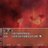

四方田憂芷 伪辉 “憂芷居然還活著”
@yomoda_yukusa
@Cyniton
四方田憂芷 伪辉 “憂芷居然還活著”
@yomoda_yukusa
2023年10月5日，是我趁十一假期跑去長沙找幾個推友一起玩的最後一天。那幾天過得很開心，並且開始了常態化的rle(儘管當時幾乎短髮)。
6日，我穿著裙子回到了宿舍。在冬季來臨以至於我不得不替換穿著前，我一直穿著短裙。
11日，因裙子而在電梯內被學妹搭訕，成為了動漫社編外成員，有了可以一起玩的人
四方田憂芷 伪辉 “憂芷居然還活著”
@yomoda_yukusa
@Cyniton 我是精神病患者。我是堕天使。我是萨麦尔。我是由之。